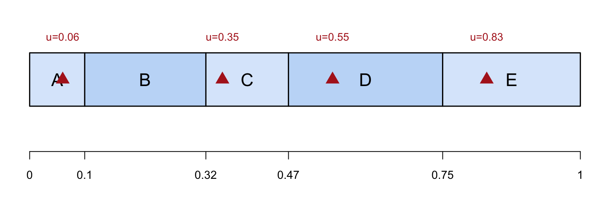

Introduction to Unequal Probability Sampling
Textbook sections:
O’Brien et al. (1995) sampled nursing home residents in the Philadelphia area to determine residents’ preferences on life-sustaining treatments (CPR, hospital transfer, feeding tubes). The target population was all residents of 294 licensed nursing homes, with 37,652 beds total — before sampling, only the number of beds was known, not the number of residents.
In a cluster sample with equal probabilities, a nursing home with 20 beds is just as likely to be chosen as one with 1000 beds — wasting the fact that we already know home size, and that resident counts (and hence answers) are tied to home size.
A town has four supermarkets, ranging in size from 100\,\text{m}^2 to 1000\,\text{m}^2. We want to estimate total sales across the four stores last month, but can only afford to sample one store. Let \psi_i = P(\text{Store } i \text{ selected}).
Since Store D accounts for 10/16 of the total floor area, we sample it with probability 10/16:
| Store | Size (M_i) | \psi_i | t_i (thousands) |
|---|---|---|---|
| A | 100 | 1/16 | 11 |
| B | 200 | 2/16 | 20 |
| C | 300 | 3/16 | 24 |
| D | 1000 | 10/16 | 245 |
| Total | 1600 | 1 | 300 |
We could realize this design with 16 numbered cards: card 1 \to A; cards 2–3 \to B; cards 4–6 \to C; cards 7–16 \to D.
Since only one store is sampled, define the Hansen-Hurwitz estimator \hat t_\psi = t_i/\psi_i for the selected store i. The Sum row gives E[\hat t_\psi] and V[\hat t_\psi] directly:
| Sample | \psi_i | t_i | \hat t_\psi | \psi_i\hat t_\psi | (\hat t_\psi-t)^2 | \psi_i(\hat t_\psi-t)^2 |
|---|---|---|---|---|---|---|
| \{A\} | 1/16 | 11 | 176 | 11 | 15,376 | 961 |
| \{B\} | 2/16 | 20 | 160 | 20 | 19,600 | 2,450 |
| \{C\} | 3/16 | 24 | 128 | 24 | 29,584 | 5,547 |
| \{D\} | 10/16 | 245 | 392 | 245 | 8,464 | 5,290 |
| Sum | 1 | 300 | 300 | 14,248 |
\begin{aligned} E[\hat t_\psi] &= \sum_{i=1}^N \psi_i\hat t_\psi = 300 = t \\[4pt] V[\hat t_\psi] &= \sum_{i=1}^N \psi_i(\hat t_\psi-t)^2 = 14{,}248 \end{aligned}
\hat t_\psi is always unbiased, because in general E[\hat t_\psi]=\sum_{i=1}^N \psi_i\dfrac{t_i}{\psi_i}=t.
Now suppose instead we take an SRS of size 1, so \psi_i=1/4 for every store (and 1/\psi_i=4=N). The Sum row gives V[\hat t_{\text{SRS}}] directly:
| Sample | \psi_i | t_i | \hat t_\psi | (\hat t_\psi-t)^2 | \psi_i(\hat t_\psi-t)^2 |
|---|---|---|---|---|---|
| \{A\} | 1/4 | 11 | 44 | 65,536 | 16,384 |
| \{B\} | 1/4 | 20 | 80 | 48,400 | 12,100 |
| \{C\} | 1/4 | 24 | 96 | 41,616 | 10,404 |
| \{D\} | 1/4 | 245 | 980 | 462,400 | 115,600 |
| Sum | 1 | 154,488 |
\begin{aligned} E[\hat t_{\text{SRS}}] &= 300 = t \\[4pt] V[\hat t_{\text{SRS}}] &= \sum_{i} \psi_i(\hat t_\psi-t)^2 = 154{,}488 \end{aligned}
\hat t_{\text{SRS}} is still unbiased, but this is over ten times larger than the PPS design’s variance of 14,248!
The PPS design uses auxiliary information: store size is known and related to sales, and the design exploits this. If Store D were selected under SRS, its huge sales total gets multiplied by N=4 (since it represents only itself), producing a wildly unstable estimate.
Alternatively, keep the SRS of size 1 but use ratio estimation with x_i=M_i (known total M_0=1600), \hat t_r = \dfrac{t_i}{M_i}\cdot M_0. The Sum row gives \sum(\hat t_r-t)^2 directly:
| Store | M_i | t_i | \hat t_r | \hat t_r-t | (\hat t_r-t)^2 |
|---|---|---|---|---|---|
| A | 100 | 11 | 176 | -124 | 15,376 |
| B | 200 | 20 | 160 | -140 | 19,600 |
| C | 300 | 24 | 128 | -172 | 29,584 |
| D | 1000 | 245 | 392 | 92 | 8,464 |
| Sum | 1600 | 300 | 856 | 73,024 |
\begin{aligned} E(\hat t_r) &= \frac{856}{4} = 214 \quad(\ne 300,\ \text{biased!}) \\[4pt] \text{MSE}(\hat t_r) &= \frac{\sum(\hat t_r-t)^2}{4} = \frac{73{,}024}{4} = 18{,}256 \end{aligned}
Notice the four \hat t_r values (176, 160, 128, 392) are numerically identical to the PPS estimates \hat t_\psi from Scheme 1! But averaged with the equal SRS probabilities (1/4 each) rather than the size-based PPS probabilities, they give a biased result (214, not 300).
Suppose n>1 and we sample with replacement: sampling with replacement means the selection probabilities do not change after the first draw. Let \psi_i = P(\text{select unit } i \text{ on any given draw}).
The idea: draw n psus with replacement (some psus may be drawn more than once). For each draw, estimate the population total using the single-draw estimator from before; average the n (independent) estimates.
A common choice, probabilities proportional to size (PPS): \psi_i = \frac{M_i}{\sum_{k=1}^N M_k}

Figure 1
Divide [0,1] into segments of length \psi_1,\ldots,\psi_N. Draw a random number u\sim\text{Uniform}(0,1) (red triangles); whichever segment u falls into determines the selected unit. In R: sample(1:N, size = n, prob = psi, replace = TRUE).
Because we sample with replacement, the sample may contain the same psu more than once. Let \mathcal R (not \mathcal S) denote the multiset of n draws, including repeats. For example, with the supermarket population, a sample of size n=10 might be \mathcal R = \{D,D,D,C,C,D,C,A,B,B\}.
Let u_i = t_i/\psi_i. We saw that for a single draw, u_i is an unbiased estimator of t. Sampling n psus with replacement gives n independent copies, which we average: \hat t_\psi = \frac1n \sum_{i\in\mathcal R} \frac{t_i}{\psi_i} = \frac1n\sum_{i\in\mathcal R} u_i = \bar u
The estimated variance: \hat V(\hat t_\psi) = \frac1n\cdot\frac{1}{n-1}\sum_{i\in\mathcal R}\Big(\frac{t_i}{\psi_i}-\hat t_\psi\Big)^2
Let u_j^* denote the value of u_i=t_i/\psi_i for the jth draw (not the jth population unit) — so \hat t_\psi = \frac1n\sum_{j=1}^n u_j^*=\bar u^*. Since draws are independent and identically distributed, E(u_j^*) = \sum_{i=1}^N u_i\psi_i = \sum_{i=1}^N \frac{t_i}{\psi_i}\psi_i = \sum_{i=1}^N t_i = t V(u_j^*) = \sum_{i=1}^N \psi_i(u_i-t)^2 = \sum_{i=1}^N \psi_i\Big(\frac{t_i}{\psi_i}-t\Big)^2
Since \hat t_\psi is the mean of n IID copies of u_j^*: E(\hat t_\psi) = E(u_j^*) = t, \qquad\qquad V(\hat t_\psi) = \frac{V(u_j^*)}{n} = \frac1n\sum_{i=1}^N \psi_i\Big(\frac{t_i}{\psi_i}-t\Big)^2
Note
There is no finite population correction — the n draws are independent (with replacement), unlike SRS without replacement.
We estimate the population mean \bar y_U = t/M_0 by \hat{\bar y}_\psi = \frac{\hat t_\psi}{\hat M_{0\psi}}, \qquad\qquad \hat M_{0\psi} = \frac1n\sum_{i\in\mathcal R}\frac{M_i}{\psi_i}
Using Chapter 4’s ratio-estimation results with y_i=t_i/\psi_i and x_i=M_i/\psi_i: \hat V(\hat{\bar y}_\psi) = \frac{1}{(\hat M_{0\psi})^2}\cdot\frac1n\cdot\frac{1}{n-1}\sum_{i\in\mathcal R}\Big(\frac{t_i}{\psi_i}-\hat{\bar y}_\psi\frac{M_i}{\psi_i}\Big)^2
Again, no fpc is needed, since sampled psus are drawn independently.
A college has 15 introductory statistics classes, with a total of 647 students. We sample n=5 classes with replacement, with probability proportional to M_i (class size), so \psi_i = M_i/647. We then survey every student in each sampled class about hours spent studying last week.
| Class | M_i | \psi_i |
|---|---|---|
| 1 | 44 | 0.0680 |
| 5 | 76 | 0.1175 |
| 12 | 24 | 0.0371 |
| 14 | 100 | 0.1546 |
| \vdots | \vdots | \vdots |
| Total | 647 | 1 |
Classes are drawn using cumulative ranges of M_i (Lahiri’s method): class 1 gets numbers 1–44, class 2 gets 45–77, and so on up to class 15.
Suppose the sample (with repeats) is \mathcal R = \{12, 14, 14, 5, 1\}, with class totals t_i (total hours studying, summed over all students). Writing u_i=t_i/\psi_i, the Sum row gives \sum u_i and \sum(u_i-\hat t_\psi)^2 directly:
| Class | \psi_i | t_i | u_i=t_i/\psi_i | u_i-\hat t_\psi | (u_i-\hat t_\psi)^2 |
|---|---|---|---|---|---|
| 12 | 24/647 | 75 | 2021.875 | 272.861 | 74,452.9 |
| 14 | 100/647 | 203 | 1313.410 | -435.604 | 189,751.2 |
| 14 | 100/647 | 203 | 1313.410 | -435.604 | 189,751.2 |
| 5 | 76/647 | 191 | 1626.013 | -123.001 | 15,129.3 |
| 1 | 44/647 | 168 | 2470.364 | 721.349 | 520,344.8 |
| Sum | 8745.07 | 989,429.3 |
\begin{aligned} \hat t_\psi &= \frac{\sum u_i}{n} = \frac{8745.07}{5} = 1749.014 \\[4pt] s^2 &= \frac{\sum(u_i-\hat t_\psi)^2}{n-1} = \frac{989{,}429.3}{4} = 247{,}357.3 \\[4pt] \text{SE}(\hat t_\psi) &= \sqrt{\frac{s^2}{n}} = \sqrt{\frac{247{,}357.3}{5}} = 222.42 \end{aligned}
Since \psi_i = M_i/647 exactly, M_i/\psi_i = 647 for every sampled class, so \hat M_{0\psi} = M_0 = 647 exactly. The average hours studied per student: \begin{aligned} \hat{\bar y}_\psi &= \frac{1749.014}{647} = 2.70 \text{ hours} \\[4pt] \text{SE}(\hat{\bar y}_\psi) &= \frac{222.42}{647} = 0.34 \text{ hours} \end{aligned}
When \psi_i = M_i/M_0 (PPS), then u_i = t_i/\psi_i = t_i\cdot(M_0/M_i)=\bar y_i\cdot M_0, where \bar y_i=t_i/M_i is the ith cluster’s own mean. So: \hat{\bar y}_{\text{pps}} = \frac{\hat t_\psi}{M_0} = \frac1n\sum_{i\in\mathcal R} \bar y_i \text{SE}(\hat{\bar y}_{\text{pps}}) = \frac{\text{SE}(\hat t_\psi)}{M_0} = \sqrt{\frac1n\cdot\frac{\sum_{i\in\mathcal R}(\bar y_i-\hat{\bar y}_{\text{pps}})^2}{n-1}}
Under PPS, we don’t need to weight the cluster means by M_i/\sum M_i at all — they can simply be averaged!
| Class | \bar y_i = t_i/M_i |
|---|---|
| 12 | 75/24 = 3.13 |
| 14 | 203/100 = 2.03 |
| 14 | 203/100 = 2.03 |
| 5 | 191/76 = 2.51 |
| 1 | 168/44 = 3.81 |
| Sum | 13.51 |
\begin{aligned} \hat{\bar y}_{\text{pps}} &= \frac{\sum \bar y_i}{5} = \frac{13.51}{5} = 2.70 \\[4pt] \text{SE}(\hat{\bar y}_{\text{pps}}) &= 0.34 \end{aligned}
Identical to the weighted calculation on the previous slide — but computed directly as the mean and SE of the five class averages.
Recall from cluster sampling: if psus are instead drawn by an ordinary SRS (not PPS with replacement), the ratio estimator is \hat{\bar y}_r = \frac{\sum_{i\in\mathcal S} \hat t_i}{\sum_{i\in\mathcal S} M_i} = \frac{\sum_{i\in\mathcal S} M_i\bar y_i}{\sum_{i\in\mathcal S} M_i} with estimated variance (including a finite-population correction) \hat V(\hat{\bar y}_r) = \frac{1}{\bar M^2}\Big(1-\frac nN\Big)\frac{s_r^2}{n} + \frac{1}{nN\bar M^2}\sum_{i\in\mathcal S}M_i^2\Big(1-\frac{m_i}{M_i}\Big)\frac{s_i^2}{m_i}
| SRS of psus + ratio estimation | PPS with replacement | |
|---|---|---|
| Selection | equal probability | \psi_i \propto M_i |
| Point estimator | \hat{\bar y}_r (ratio, slightly biased) | \hat{\bar y}_\psi (Hansen-Hurwitz ratio, still approx.) |
| Finite population correction | yes, (1-n/N) | no — draws are independent |
| Weighting of cluster means | by M_i/\sum M_i | no weighting needed if \psi_i\propto M_i |
Both approaches exploit the same correlation between t_i and M_i, but PPS builds it into the design, giving the cleanest formulas when \psi_i\propto M_i exactly.
Now suppose that, instead of observing every ssu in a selected psu, we take a subsample. Let Q_i be the number of times psu i occurs in \mathcal R; if Q_i>0, we draw a different, independent subsample each time psu i is selected (unlike one-stage sampling, where a repeated psu just contributes the same observed total again). For the jth subsample from psu i (j=1,\ldots,Q_i), let \hat t_{ij} estimate t_i, with E[\hat t_{ij}]=t_i.
\hat t_\psi = \frac1n \sum_{i=1}^N\sum_{j=1}^{Q_i} \frac{\hat t_{ij}}{\psi_i} \hat V(\hat t_\psi) = \frac1n\cdot\frac{1}{n-1}\sum_{i=1}^N\sum_{j=1}^{Q_i}\Big(\frac{\hat t_{ij}}{\psi_i}-\hat t_\psi\Big)^2
(If Q_i=0 for some psu, that psu simply contributes no terms.) Because sampling is with replacement, it’s possible to draw more than one independent subsample from the same psu — so this variance estimator automatically captures both the between-psu variability and the within-psu subsampling variability.
\hat{\bar y}_\psi = \frac{\hat t_\psi}{\hat M_{0\psi}}, \qquad \hat M_{0\psi} = \frac1n\sum_{i\in\mathcal R}\frac{M_i}{\psi_i} \hat V(\hat{\bar y}_\psi) = \frac{1}{(\hat M_{0\psi})^2}\cdot\frac1n\cdot\frac{1}{n-1}\sum_{i=1}^N\sum_{j=1}^{Q_i}\Big(\frac{\hat t_{ij}}{\psi_i}-\hat{\bar y}_\psi\frac{M_i}{\psi_i}\Big)^2
If an SRS of m_i ssus is taken within psu i, the overall sampling weight for ssu j in psu i becomes w_{ij} = \frac{1}{n\psi_i}\cdot\frac{M_i}{m_i}
Instead of surveying every student, we now subsample 5 students per class (class 14 is selected twice, with a different subsample of 5 each time). Writing u_i=\hat t_i/\psi_i, the Sum row gives \sum u_i and \sum(u_i-\hat t_\psi)^2 directly:
| Class | M_i | \psi_i | \bar y_i | \hat t_i | u_i | e_i=u_i-\hat t_\psi | e^2_i |
|---|---|---|---|---|---|---|---|
| 12 | 24 | 0.0371 | 2.4 | 57.6 | 1552.8 | -64.7 | 4,186.1 |
| 14 | 100 | 0.1546 | 1.6 | 160.0 | 1035.2 | -582.3 | 339,073.3 |
| 14 | 100 | 0.1546 | 2.0 | 200.0 | 1294.0 | -323.5 | 104,652.2 |
| 5 | 76 | 0.1175 | 2.8 | 212.8 | 1811.6 | 194.1 | 37,674.8 |
| 1 | 44 | 0.0680 | 3.7 | 162.8 | 2393.9 | 776.4 | 602,797.0 |
| Sum | 8087.5 | 0 | 1,088,383 |
\begin{aligned} \hat t_\psi &= \frac{8087.5}{5} = 1617.5 \\[4pt] s^2 &= \frac{1{,}088{,}383}{4} = 272{,}095.8 \\[4pt] \text{SE}(\hat t_\psi) &= \sqrt{\frac{s^2}{5}} = 233.28\\[4pt] \hat{\bar y}_\psi &= \frac{1617.5}{647} = 2.5\text{ h} \\[4pt] \text{SE}(\hat{\bar y}_\psi) &= \frac{233.28}{647} = 0.36\text{ h} \end{aligned}
Compared with the full-census example (\hat{\bar y}_\psi=2.70, \text{SE}=0.34), subsampling gives a similar point estimate at a somewhat higher SE — the price of observing fewer students per class.
For sampling without replacement, the weight is the reciprocal of the inclusion probability, 1/E[Z_i]. For sampling with replacement, we use the first-stage weight w_i = \frac{1}{\text{expected number of hits}} = \frac{1}{E[Q_i]} = \frac{1}{n\psi_i}
For one-stage cluster sampling (every ssu observed each time psu i is hit), w_{ij}=w_i=1/(n\psi_i) for every ssu j in psu i, and \hat t_\psi = \sum_{i\in\mathcal R}\sum_{j=1}^{M_i} w_{ij}y_{ij}, \qquad\qquad \hat{\bar y}_\psi = \frac{\sum_{i\in\mathcal R}\sum_{j=1}^{M_i} w_{ij}y_{ij}}{\sum_{i\in\mathcal R}\sum_{j=1}^{M_i} w_{ij}}
For two-stage sampling with an SRS of m_i ssus per selected psu, the weight picks up an extra factor M_i/m_i for the subsampling stage, exactly as in ordinary two-stage cluster sampling.